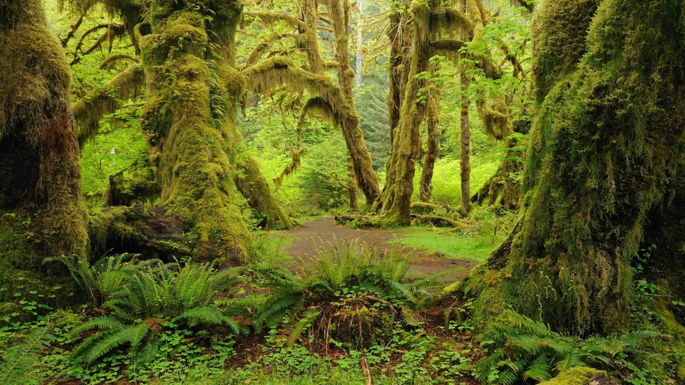
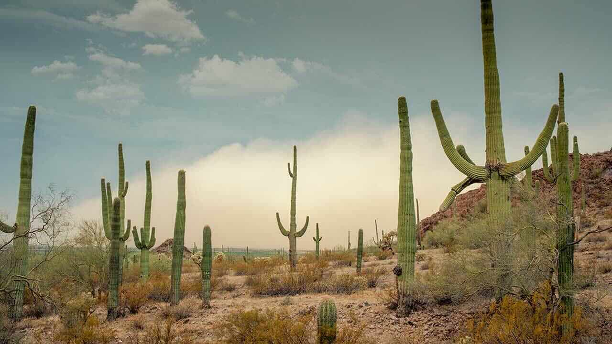
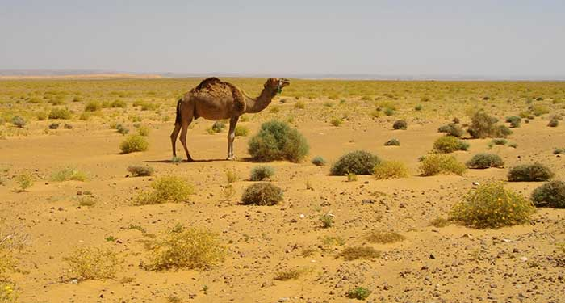
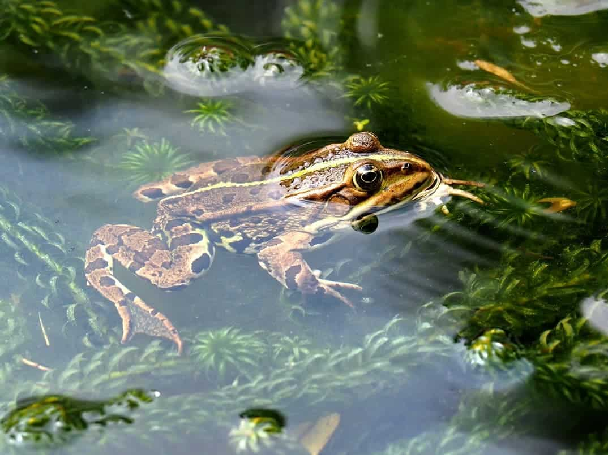
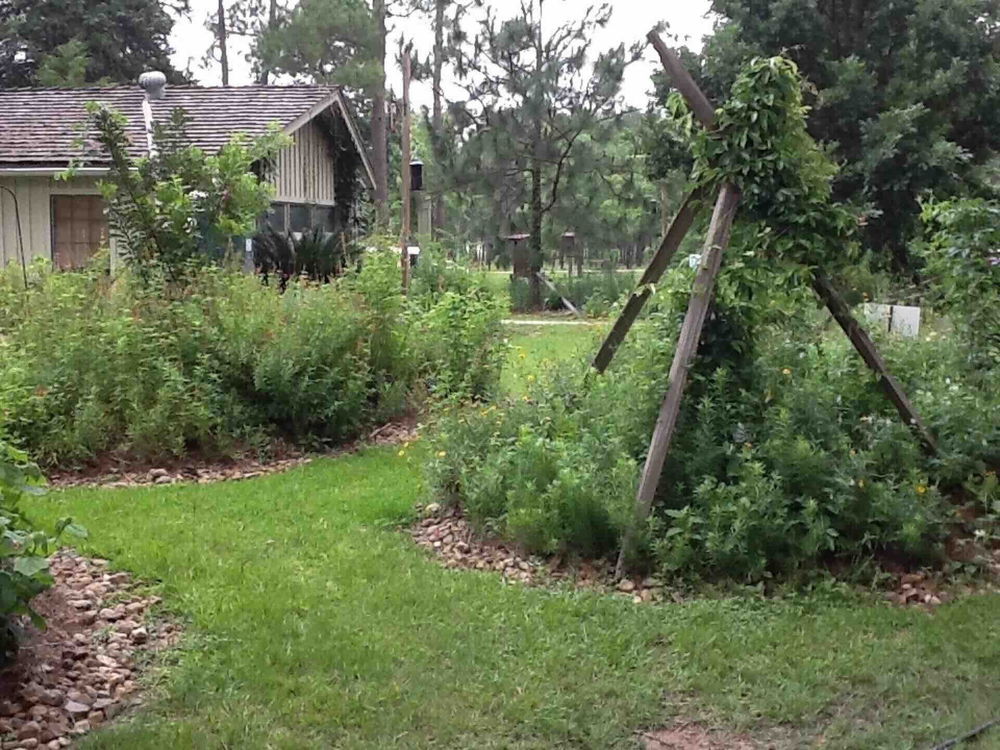
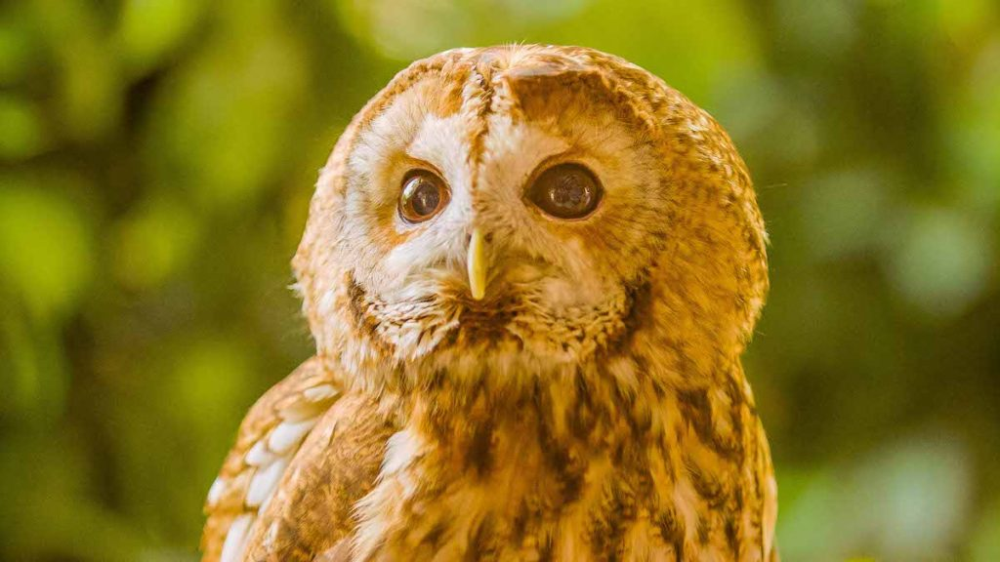

Exploring Biodiversity: The Amazing Variety of Life on Earth
What is Biodiversity?
Biodiversity is the measurement of the number of different kinds of plants and animals that live in an area. Different areas on Earth have different plants and animals. Some places have many types of living things, while others have fewer.
Important Words to Know:
Biodiversity: The measurement of the number of different kinds of plants and animals that live in an area.
Environment: All of the living and non-living things in an area.
Habitat: The place a plant or animal naturally lives and grows.
Amazing Rainforests

A rainforest with dense vegetation and high biodiversity
The rainforest is a very diverse environment. More than 40% of the animals and plants on Earth live in the rainforest. The rainforest gets lots of rain, which helps plants grow. Many animals eat these plants or use them for shelter.
Rainforests are warm and wet habitats that are green with lots of trees. The tops of these trees form what scientists call a "canopy."
Canopy: The tops of the trees in the rainforest.
Rainforest: A warm and wet habitat that is green with lots of trees and gets lots of rain.
Fun Fact!
Some rainforests receive over 100 inches of rain each year! That's enough to fill a bathtub many times over!
Think About It:
Why do you think rainforests have so many more types of plants and animals than cold places like the Arctic?
Answer: The Arctic is very cold, which makes it tough for many plants and animals to survive there. A rainforest gets lots of rain, which causes lots of plants to grow. These plants provide homes and food for many different animals. It is also warm in the rainforest, making it easier for many types of animals to live there.
Life in the Desert

A desert landscape showing its unique environment
Deserts might look empty at first glance, but many plants and animals live there too. Deserts are homes to foxes, snakes, birds, and lizards. Plants like cacti can grow in the desert too. Many animals are hard to see there because they hide underground.

A camel adapted to survive in the harsh desert conditions
Subterranean: Underground.
Think About It:
Why do desert animals build homes underground?
Answer: Desert animals build subterranean (underground) homes to stay cool in the heat. The desert surface can get very hot during the day, but it's cooler underground. Being underground is also a good place to hide from predators.
Compare and Contrast:
How are rainforests and deserts different? How are they the same?
Different: Rainforests get lots of rain; deserts get very little. Rainforests have many tall trees; deserts have fewer plants that are adapted to dry conditions.
Same: Both are habitats for many animals and plants. Both have animals that have adapted special ways to survive in their environment.
Life in and Around Ponds

A frog in its natural pond habitat
A pond is home to many different plants and animals. Fish, birds, frogs, and bugs are just a few of the different kinds of plants and animals found near a pond. Many of these animals need to be in water to live, like a frog or a fish.
Fun Fact!
Frogs start their lives completely underwater as tadpoles, but as they grow, they develop legs and lungs that allow them to spend time on land too!
Think About It:
Why do you think ponds with more plants usually have more animals living in and around them?
Answer: Plants in a pond provide food, shelter, and oxygen for animals. More plants means more places for animals to hide from predators, more food for plant-eating animals, and better water quality.
Biodiversity in Your Backyard

Even your backyard is full of biodiversity
Even your backyard is a diverse environment. At night, many animals move around our neighborhoods. Some are scavengers, who look for food anywhere they can find it. These animals include raccoons, skunks, and mice.

A tawny owl, a nocturnal predator you might find in your neighborhood at night
Fun Fact!
Raccoons have very sensitive hands that can feel objects in detail, even underwater in the dark!
Think About It:
What kinds of things do raccoons eat?
Answer: Raccoons are scavengers, so they eat whatever they can find. Sometimes they dig around in garbage cans for food. They also eat fruits, nuts, insects, small animals, and even food left in pet dishes.
Think About It:
Why does a skunk have very few predators?
Answer: Skunks spray stinky liquid that keeps predators away. Any animal that tries to eat a skunk could get sprayed with this awful-smelling liquid. Birds of prey like owls (such as the tawny owl in the picture) might try to eat a skunk by attacking it from the sky, avoiding the spray.
Scientists and Biodiversity

A scientist studying biodiversity in the field
Scientists study the biodiversity of life in certain areas. They count the number of plants and animals in an area to see if that environment is healthy. If the number of living things goes down, scientists can investigate to find out why.
Be a Scientist Activity:
Try counting how many different types of plants and animals you can find in your yard or at a park. Make a list or draw pictures of what you find. This is what scientists do when they survey an area!
Think About It:
Why do scientists survey areas of land?
Answer: Scientists survey areas of land to learn about the types of animals and plants living there. This survey can tell them how diverse an area is and if the ecosystem is healthy. If they notice certain plants or animals disappearing, they can try to find out why and help protect them.
How Seasons Affect Biodiversity
The plants and animals we see change with the seasons. In spring and summer, more plants grow and animals are active. In fall and winter, some plants die back and some animals hibernate or migrate to warmer places.
Seasonal Observation:
If you visited the same pond in summer and winter, how might the plants and animals you see be different?
In summer: More plants growing, frogs active, many insects, birds nesting, turtles sunning themselves
In winter: Fewer visible plants, many insects gone, some animals hibernating, different birds that migrate for winter
Day and Night Biodiversity
Some animals are active during the day (diurnal), while others are active at night (nocturnal). This means the biodiversity you observe changes depending on when you look!
Day vs. Night Animals:
Daytime animals: Most birds, butterflies, bees, squirrels
Nighttime animals: Owls (like the tawny owl in the picture), bats, raccoons, moths, crickets
How Humans Affect Biodiversity
People can change habitats in ways that help or harm biodiversity. Building houses, roads, and cities can reduce the space for plants and animals. But people can also help by creating parks, planting gardens, and protecting natural areas.
Help Biodiversity Activity:
What are three things you could do to help the plants and animals in your neighborhood?
Examples: Plant flowers for bees and butterflies, put up a bird feeder, keep a small dish of water outside for animals to drink, learn about local wildlife
Review: What Makes an Area Have High Biodiversity?
- Plenty of water and sunlight for plants to grow
- Warm temperatures (in most cases)
- Different types of places for animals to live (trees, ground, water)
- Plenty of food sources
- Space for animals to find mates and raise young
Final Think About It:
What could you say about an area with high biodiversity?
Answer: It would have a lot of different kinds of plants and animals living there. This usually means the environment is healthy and has all the things plants and animals need to survive, like food, water, and shelter.